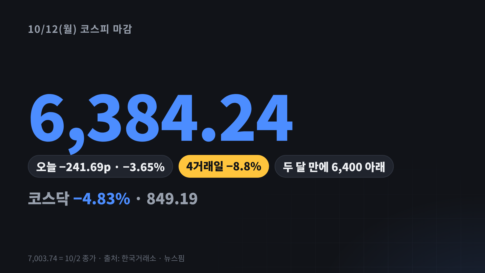
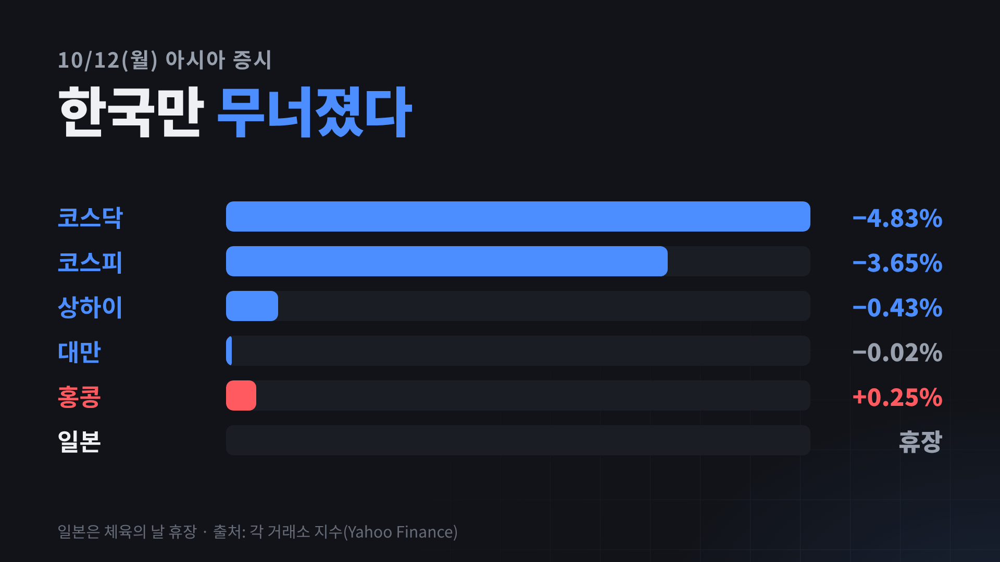
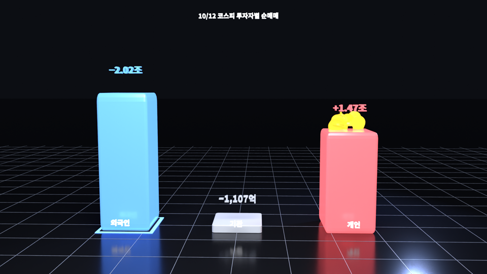
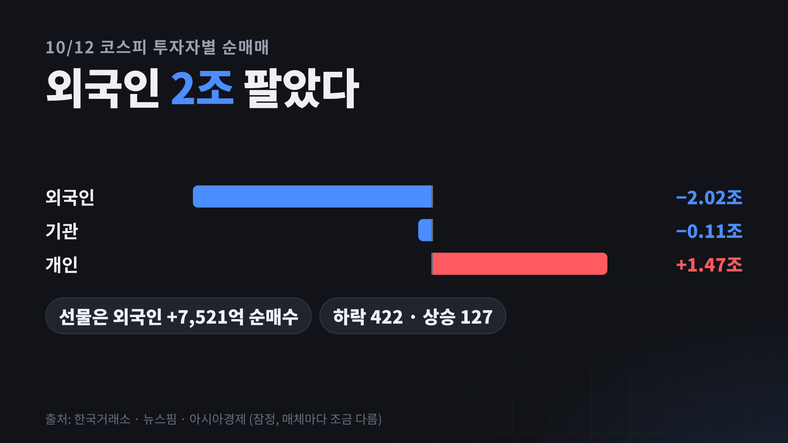
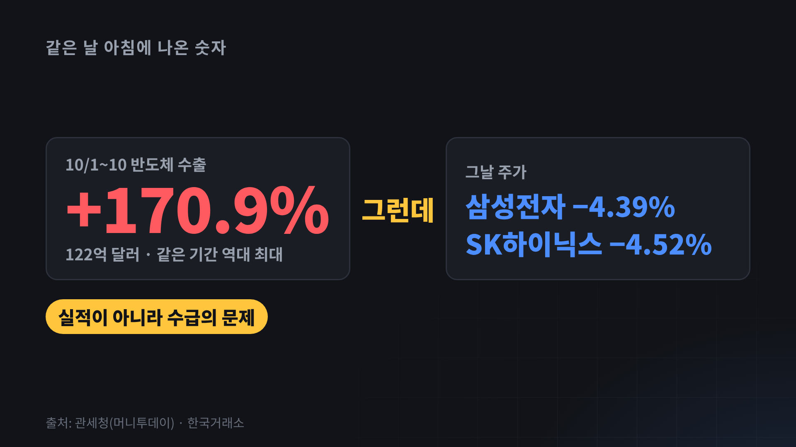
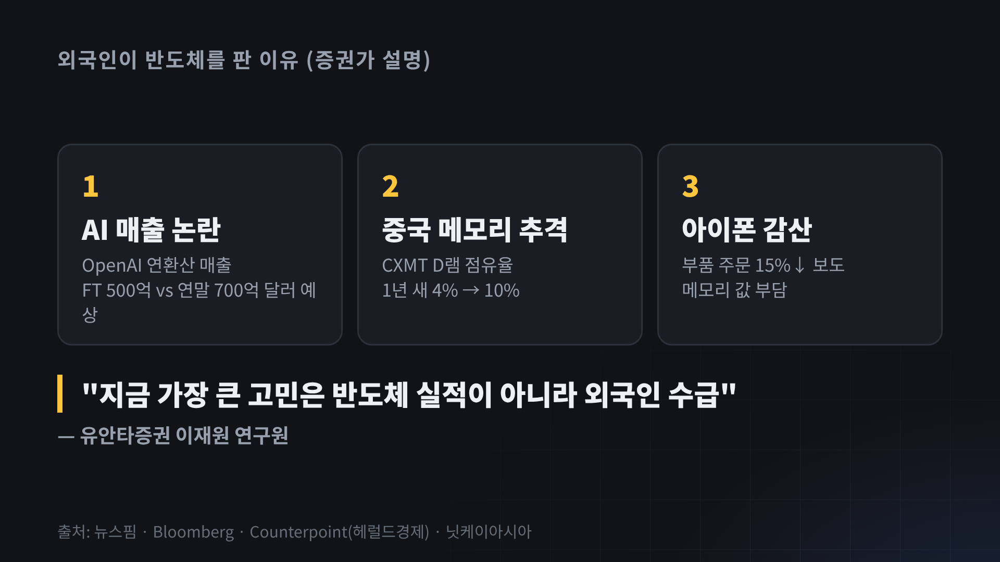
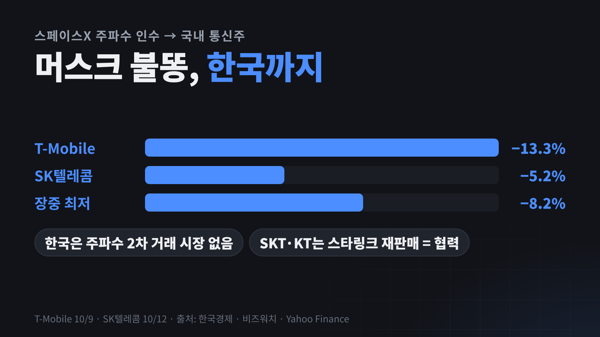

기준: 2026년 10월 12일(월) 한국 마감 · 미국은 10/9(금) 마감과 오늘 밤 선물. 굵은 노란 글씨는 힘줘서 읽을 숫자, / 표시는 잠깐 쉬는 곳이에요. 장면마다 블렌더 3D(b01~b03)나 모션 카드(m01~m09)가 얼굴 옆에 들어가요.
강조해서 읽기상승·좋음하락·나쁨연출(읽지 않음)
장면 1
오프닝 훅 · 3D
0:00–0:20
첫 4초는 블렌더 b01 풀화면(얼굴 없이) → 얼굴로. "그런데"에서 한 박자 쉬기.
제가 오늘 아침에 본 숫자는 / 반도체 수출 +170%, / 역대 최대였어요.
그런데 오후 3시 반에 본 숫자는 / 코스피 −3.65%.
6,384. / 7,000을 되찾은 지 / 딱 4거래일 만에 / 9% 가까이 빠졌어요.
수출이 역대 최대인데 왜 이렇게 빠졌는지, / 오늘 숫자로 하나씩 볼게요.
b01_kospi.mp4 (블렌더 3D)

m01-hook.mp4
편집 · 0:00 b01 풀화면 4초(5거래일 막대가 솟고 선이 그려지며 카메라가 6,384로 다가감, "−3.65%" 3D 글씨) → 얼굴 + 옆 칸 m01-hook(7,003→6,384 카운트다운). 효과음: 첫 문장 intro1 · "그런데" emph · "6,384" visual.
장면 2
인사 · 기준 시점
0:20–0:30
안녕하세요, (채널명)입니다.
오늘은 10월 12일 월요일 한국장 마감 기준이고요, / 미국은 오늘 밤 장이 열리기 전이라 / 금요일 마감과 지금 선물까지 볼게요.
편집 · 하단 고정 자막 "10/12(월) 한국 마감 · 미국 10/9 마감 + 선물".
장면 3
오늘 장 · 코스피 6,384
0:30–1:05
코스피는 241포인트, 3.65% 빠진 6,384로 끝났어요. / 4일 연속 하락이고, / 6,400 아래로 닫은 건 두 달 만이에요.
코스닥은 더 아팠어요. / −4.83%, 849.
오른 종목이 127개, / 내린 종목이 422개. / 거의 다 빠진 날이었죠.
그런데 저는 이 화면이 더 눈에 들어왔어요. / 같은 날 아시아에서 / 대만은 보합, 홍콩은 오히려 +0.25%. / 한국만 이렇게 빠졌어요.

m02-asia.mp4
편집 · 앞 세 문장 얼굴 + 하단 숫자 자막 → "그런데 저는"부터 m02-asia. 효과음: "한국만" emph.
장면 4
누가 팔았나 · 외국인 2조 · 3D
1:05–1:40
누가 팔았냐면, / 외국인이 하루에 2조 원을 팔았어요.
개인이 1조 4,700억을 받아 냈고, / 기관은 1,100억 정도 팔았고요.
재밌는 건 / 같은 외국인이 선물 시장에서는 / 7,500억 넘게 샀다는 거예요.
그러니까 한국이 싫어서 다 판 게 아니라, / 갖고 있던 반도체 주식을 줄인 쪽에 가까워 보여요.

b02_flow.mp4 (블렌더 3D)

m03-flow.mp4
편집 · 첫 두 문장: b02 풀화면(막대 셋이 솟고 외국인 막대에서 동전이 개인 막대로 날아감) → 셋째 문장부터 얼굴 + m03-flow(선물 칩). 효과음: "2조 원" emph · 동전 구간 visual3_papa.
장면 5
역설 · 수출 +170.9%
1:40–2:15
"그런데"에서 한 박자. 제 생각 파트는 천천히.
오늘 아침 관세청 숫자는 정말 좋았어요. / 10월 1일부터 10일까지 반도체 수출이 122억 달러, / 1년 전보다 170.9%. / 같은 기간 역대 최대예요.
그런데 그날 삼성전자 −4.4%, / SK하이닉스 −4.5%.
제가 느낀 건, / 지금 시장은 "반도체가 잘 팔리냐"를 보는 게 아니라 / "외국인이 계속 파느냐"를 보고 있다는 거예요.
유안타증권도 같은 얘기를 했어요. / 지금 제일 큰 고민은 / 반도체 실적이 아니라 외국인 수급이라고요.

m04-paradox.mp4
편집 · m04-paradox(왼쪽 +170.9% 카운트업 → "그런데" → 오른쪽 두 종목). 효과음: "170.9%" emph · "그런데" trans1_swing.
장면 6
왜 팔았나 · 세 가지
2:15–2:55
증권가가 꼽은 이유는 세 가지예요.
하나, AI 매출 논란. / 지난주 OpenAI 매출이 기대보다 적다는 보도가 나왔다가 / 하루 만에 "연말 700억 달러"로 반전됐죠. / 숫자가 이렇게 흔들리면 / AI 반도체 기대도 같이 흔들려요.
둘, 중국 메모리. / 중국 CXMT의 D램 점유율이 / 1년 새 4%에서 10%까지 올라왔어요.
셋, 아이폰 감산. / 애플이 아이폰18 프로 부품 주문을 / 15% 넘게 줄였다는 보도요. / 이건 바로 다음 장면에서 볼게요.

m05-why.mp4
편집 · m05-why(카드 1·2·3 차례로, 마지막 인용문). 효과음: 각 번호 visual2_click.
장면 7
LG이노텍 −16% · 아이폰 · 3D
2:55–3:35
오늘 가장 크게 맞은 종목이 / LG이노텍이에요. / 하루에 −16.2%.
LG이노텍은 아이폰 카메라 모듈을 만드는데요, / 매출의 78%가 애플이에요. / 애플이 부품 주문을 줄이면 / 제일 먼저 맞는 회사죠.
애플이 주문을 줄인 이유로 꼽힌 게 / 메모리 값이에요. / AI 데이터센터가 메모리를 쓸어 가니까 / 값이 너무 올라서 / 아이폰 가격도 100달러 올렸거든요.
저는 이게 / 오늘 장에서 제일 중요한 연결고리라고 봐요. / 메모리 값이 오르면 삼성·하이닉스는 좋지만, / 너무 오르면 폰이 덜 팔리고 / 결국 메모리 주문도 줄어요.
b03_iphone.mp4 (블렌더 3D)
편집 · 첫 문장부터 b03 풀화면 4초(휴대폰이 돌며 들어오고 메모리 칩이 빠져나와 "메모리 값↑" → 오른쪽 "LG이노텍 −16.2%") → 얼굴. 효과음: "−16.2%" emph · 칩 등장 visual1_shutter.
장면 8
머스크 불똥 · SK텔레콤
3:35–4:05
지난 영상에서 말씀드린 / 미국 통신주 급락, 기억하세요? / 스페이스X가 휴대폰 주파수를 사서 / T-Mobile이 −13% 빠졌던 거요.
그 불똥이 오늘 한국까지 왔어요. / SK텔레콤이 장 초반 −8%까지 빠졌다가 / −5.2%로 끝났어요.
그런데 업계 얘기는 좀 달라요. / 한국은 주파수를 사고파는 시장이 없어서 / 스타링크가 바로 들어오기 어렵고, / 오히려 SKT, KT는 스타링크를 같이 파는 협력 관계래요.
그래서 저는 이건 / 실제 위협보다는 / 분위기에 같이 쓸린 쪽이라고 봐요.

m06-telecom.mp4
편집 · m06-telecom. 효과음: "한국까지" trans · "같이 파는" emph.
장면 9
4거래일 · 삼성 −9% · 하이닉스 −13%
4:05–4:30
지난 영상 이후로 다시 계산해 봤어요.
7,000을 되찾았던 10월 2일부터 오늘까지 / 코스피 −8.8%, / 삼성전자 −9.2%, / SK하이닉스 −12.8%.